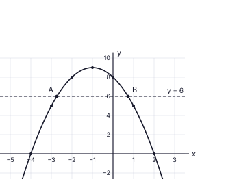
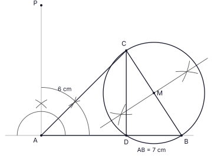
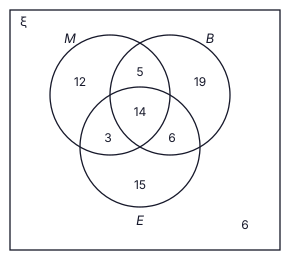

| (i) | |
| පොලිය = 48 000 × 10100 × 1 = රු. 4 800 | 1 |
| ගෙවන මුළු මුදල = 48 000 + 4 800 = රු. 52 800 | 1 |
| (ii) | |
| වාරිකය = 51 120 ÷ 12 = රු. 4 260 | 1 |
| (iii) | |
| සෑම මසකම මිලෙන් රු. 4 000 බැගින් ගෙවන නිසා ශේෂයන් 48 000, 44 000, 40 000, …, 4 000 (පද 12 ක්) | 1 |
| = 4 000 × (12 + 11 + … + 1) = 4 000 × 12 × 132 | 1 |
| = 4 000 × 78 = රු. 312 000 (හෝ ස.ශ්රේ. එකතුව: 122 (48 000 + 4 000) = 312 000) | 1 |
| (iv) | |
| 3 120 = 312 000 × r100 × 112 | 1 |
| r = 3 120 × 100 × 12312 000 = 12 | 2 |
| ක්රමය 2 හි වාර්ෂික පොලී අනුපාතය 12% > 10% වන නිසා එය ක්රමය 1 ට වඩා වැඩිය. | 1 |
මුළු ලකුණු: 10
| (i) | |
| x = −1 රේඛාව වටා සමමිතිය නිසා x = 0 හි අගය x = −2 හි අගයට සමාන වේ: y = 8 | 1 |
| (ii) | |
 | |
| දෙඅක්ෂයටම සුදුසු පරිමාණයක්, අක්ෂ නම් කිරීම | 1 |
| ලක්ෂ්ය 9ම නිවැරදිව ලකුණු කිරීම (8 හෝ 9: ලකුණු 1; 8 ට අඩු: 0) | 1 |
| සුමට වක්රය, උපරිම ලක්ෂ්යය (−1, 9) | 1 |
| (iii) | |
| (a) x = −4 සහ x = 2 | 1 |
| (b) y = −(x + 4)(x − 2) | 1 |
| (iv) | |
| (a) y = 6 රේඛාව ඇඳීම; A සහ B x ≈ −2.7 සහ x ≈ 0.7 හි (−2.8 සිට −2.6 දක්වා සහ 0.6 සිට 0.8 දක්වා පිළිගන්න) | 1 |
| y > 6 වන්නේ −2.7 < x < 0.7 විට | 1 |
| (b) AB = 0.7 − (−2.7) = 3.4 සිට 3.5 දක්වා (නිවැරදි අගය: x = −1 ± √3, AB = 2√3 = 3.46 ≈ 3.5; 3.4 – 3.6 පිළිගන්න) | 2 |
මුළු ලකුණු: 10
| (i) | |
| △ABC හි: BC = AC sin 20°40′ = 45 × 0.3529 | 1 |
| BC = 15.88 m (sin 20°40′ = 0.3529 වගුවෙන්) | 1 |
| DC = BC නිසා BD = 2 × BC = 31.76 m | 1 |
| (ii) | |
| △DBE හි (∠B = 90°): tan DÊB = BDBE | 1 |
| = 31.7645 = 0.7058 (= 2 sin 20°40′ = 0.7058) | 1 |
| (iii) | |
| ස්පර්ශක වගුව: tan 35°10′ = 0.7046 සහ tan 35°20′ = 0.7089 | 1 |
| 0.7058 − 0.7046 = 0.0012; 10′ කට වෙනස 0.0043 නිසා අමතර කෝණය ≈ 3′ | 1 |
| DÊB ≈ 35°13′ (35°10′ සිට 35°20′ දක්වා පිළිගන්න) | 1 |
| (iv) | |
| DÊB − CÂB = 35°13′ − 20°40′ = 14°33′ (හෝ: DÊB > 35°10′ නිසා DÊB − CÂB > 14°30′) | 1 |
| 14°33′ > 14° නිසා වෙනස 14° ට වඩා වැඩිය. | 1 |
මුළු ලකුණු: 10
| (i) | |
| සෘජුකෝණාස්රයේ වර්ගඵලය = 2x(x + 4) = 2x2 + 8x | 1 |
| සිදුරේ වර්ගඵලය = (x − 2)2 = x2 − 4x + 4 | 1 |
| 2x2 + 8x − (x2 − 4x + 4) = 152, එබැවින් x2 + 12x − 156 = 0 | 1 |
| (ii) | |
| x = −12 ± √(144 + 624)2 | 1 |
| √768 = √(256 × 3) = 16√3, එබැවින් x = −6 ± 8√3 | 1 |
| x ධන විය යුතුය: x = −6 + 8 × 1.73 = 7.84 | 1 |
| x ≈ 8 cm | 1 |
| (iii) | |
| 2x = 2(−6 + 8√3) = −12 + 16√3 | 1 |
| √3 = 1.73 භාවිතයෙන්: 16√3 = 27.68 | 1 |
| 2x = 27.68 − 12 = 15.68 cm > 15 cm (√3 > 1.73 නිසා සත්ය අගය ඊටත් වැඩිය) | 1 |
මුළු ලකුණු: 10
| (i) | |
| x + y = 30 …… (1) | 1 |
| 90x + 140y = 3 250, i.e. 9x + 14y = 325 …… (2) | 1 |
| (1) × 9: 9x + 9y = 270 …… (3) | 1 |
| (2) − (3): 5y = 55, එබැවින් y = 11 | 1 |
| x = 30 − 11 = 19. කුඩා අභ්යාස පොත් 19 ක්, විශාල අභ්යාස පොත් 11 ක් (පරීක්ෂාව: 90 × 19 + 140 × 11 = 1 710 + 1 540 = 3 250) | 1 |
| (ii) | |
| කුඩා පොතක පිටු ගණන n ලෙස ගනිමු; විශාල පොතක පිටු ගණන n + 40 වේ | 1 |
| 19n + 11(n + 40) = 2 840 | 2 |
| 30n = 2 840 − 440 = 2 400 | 1 |
| n = පිටු 80 ක් | 1 |
මුළු ලකුණු: 10
| (i) | |
| මධ්ය අගයන්: 24.5, 34.5, 44.5, 54.5, 64.5, 74.5 (පිළිවෙළින්) | 1 |
| Σfx = 2×24.5 + 8×34.5 + 10×44.5 + 10×54.5 + 8×64.5 + 2×74.5 = 49 + 276 + 445 + 545 + 516 + 149 = 1 980 | 2 |
| මධ්යන්යය = 1 980 ÷ 40 = ගනුදෙනුකරුවන් 49.5 ක් | 1 |
| (ii) | |
| 49.5 × 30 | 1 |
| = ගනුදෙනුකරුවන් 1 485 ක් | 1 |
| (iii) | |
| 49.5 × 7 × 120 | 1 |
| = රු. 41 580 | 1 |
| (iv) | |
| ගනුදෙනුකරුවන් 40 ට අඩු දින: 20 – 29 හි දින 2 ක් සහ 30 – 39 හි දින 8 ක් | 1 |
| කුඩාම මුළු ගණන = 2 × 20 + 8 × 30 = 40 + 240 = 280 | 1 |
මුළු ලකුණු: 10
| (i) | |
 | |
| AB = 7 cm ඇඳීම (6.9 – 7.1 cm පිළිගන්න) | 1 |
| A හි දී 90° කෝණය චාප පෙනෙන සේ නිර්මාණය කිරීම (A හි දී AB ට ලම්බකය) | 1 |
| (ii) | |
| ∠BAP හි සමච්ඡේදකය (45°) චාප සහිතව නිර්මාණය කිරීම | 1 |
| AC = 6 cm (5.9 – 6.1 පිළිගන්න) වන සේ C ලකුණු කර BC යා කිරීම; BC ≈ 5.1 cm (5.0 – 5.2 පිළිගන්න) | 1 |
| (iii) | |
| B සහ C සිට BC හි භාගයට වඩා වැඩි සමාන අරයකින් දෙපසම චාප ඇඳීම | 1 |
| ලම්බ සමච්ඡේදකය ඇඳීම; BC හි මධ්ය ලක්ෂ්යය M සොයා ගැනීම | 1 |
| M කේන්ද්රය ද MB (≈ 2.5 cm) අරය ද ඇති, B සහ C හරහා යන වෘත්තය ඇඳීම | 1 |
| (iv) | |
| AB මත D ලකුණු කිරීම (AD ≈ 4.2 cm) සහ CD යා කිරීම | 1 |
| ∠BDC = 90° (අර්ධ වෘත්තයක කෝණය; BC විෂ්කම්භයකි) | 1 |
| (v) | |
| △ADC හි: ∠DAC = 45°, ∠ADC = 90° (ත්රිකෝණයක අභ්යන්තර කෝණ ඓක්යය 180°), එබැවින් ∠ACD = 45° | 1 |
මුළු ලකුණු: 10
| (i) | |
| △GDE සහ △FCE හි: ∠GDE = ∠FCE (ඒකාන්තර කෝණ, AG ∥ BF, DC ඡේදකය) | 1 |
| ∠DEG = ∠CEF (ප්රතිමුඛ කෝණ); DE = EC (E යනු DC හි මධ්ය ලක්ෂ්යය) | 1 |
| ∴ △GDE ≅ △FCE (කෝ.කෝ.පා.) | 1 |
| (ii) | |
| අංගසමතාවයෙන් GE = EF (අනුරූප පාද) | 1 |
| GDCF හි GF සහ DC විකර්ණ එකිනෙක සමච්ඡේදනය වන නිසා (GE = EF සහ DE = EC) GDCF සමාන්තරාස්රයකි | 1 |
| (iii) | |
| △HBF සහ △FCE හි: ∠HBF = ∠ECF (අනුරූප කෝණ, HB ∥ EC) | 1 |
| ∠HFB = ∠EFC (පොදු කෝණය); එබැවින් තුන්වන කෝණද සමාන වන අතර △HBF, △FCE ට සමකෝණික වේ | 1 |
| △FCE ≅ △GDE (කොටස (i)), එබැවින් △HBF සහ △GDE සමකෝණික වේ | 1 |
| (iv) | |
| △HBF ∼ △ECF: HBEC = BFCF. BF = BC − CF = 23 BC නිසා BF : CF = 2 : 1 | 1 |
| HB = 2 × EC = 2 × 12 DC = DC = AB (සමාන්තරාස්රයේ ප්රතිමුඛ පාද), එබැවින් BH = AB | 1 |
මුළු ලකුණු: 10
| (i) | |
| එක් පිරමීඩයක පරිමාව = 13 × a2 × 3a = a3 | 1 |
| පිරමීඩ 8 හි පරිමාව = 8a3; සිලින්ඩරයේ පරිමාව = πr2 × 6r = 6πr3 | 2 |
| 8a3 = 6πr3, එබැවින් a3 = 34 πr3 | 1 |
| (ii) | |
| a3 = 3 × 3.14 × 4.534; lg a3 = lg 3 + lg 3.14 + 3 lg 4.5 − lg 4 | 1 |
| = 0.4771 + 0.4969 + 3 × 0.6532 − 0.6021 = 0.4771 + 0.4969 + 1.9596 − 0.6021 = 2.3315 (වගු: lg 3 = 0.4771, lg 3.14 = 0.4969, lg 4.5 = 0.6532, lg 4 = 0.6021) | 1 |
| a3 = 2.3315 හි ප්රතිලඝුගණකය ≈ 214.5 (214 – 215 පිළිගන්න); lg a = 2.3315 ÷ 3 = 0.7772, a ≈ 5.99, එබැවින් a ≈ 6 cm | 1 |
| (iii) | |
| කොටු කුට්ටියේ පරිමාව = a2 × 3a = 3a3; පිරමීඩයේ පරිමාව = a3 | 1 |
| ඉතිරි පරිමාව = 3a3 − a3 = 2a3 | 1 |
| = 2 × 63 = 432 cm3 (a3 ≈ 214.5 භාවිතයෙන් 429 – 432 පිළිගන්න) | 1 |
මුළු ලකුණු: 10
| (i) | |
| 8, 12, 16 | 1 |
| (ii) | |
| Tn = a + (n − 1)d: T20 = 8 + 19 × 4 | 1 |
| = බෝතල් 84 ක් | 1 |
| (iii) | |
| S20 = 202 (8 + 84) | 1 |
| = බෝතල් 920 ක් | 1 |
| (iv) | |
| S16 = 162 [2a + 15 × 7] = 920 | 1 |
| 2a + 105 = 115 | 1 |
| a = බෝතල් 5 ක් | 1 |
| (v) | |
| 8 + 4(n − 1) = 5 + 7(n − 1) | 1 |
| 3 = 3(n − 1), n = 2: 2 වන දිනයේ (දෙදෙනාම බෝතල් 12 බැගින් එකතු කළහ) | 1 |
මුළු ලකුණු: 10
| (i)(a) | |
| ∠CPB = 90° (CP ⊥ ස්පර්ශක PBQ) සහ ∠CXB = 90° (දී ඇත, CD ⊥ AB) | 1 |
| ∠PBX = 90° (ස්පර්ශකය B හි දී විෂ්කම්භය AB ට ලම්බක වේ) | 1 |
| PBXC හි ∠CPB + ∠CXB = 90° + 90° = 180° (සම්මුඛ කෝණ පරිපූරක) නිසා PBXC වෘත්ත චතුරස්රයකි | 1 |
| (i)(b) | |
| CP ⊥ PQ සහ AB ⊥ PQ නිසා CP ∥ AB; ∠PCB = ∠CBX (ඒකාන්තර කෝණ) | 1 |
| OB = OC (අරයන්) නිසා ∠OCB = ∠OBC (සමද්විපාද ත්රිකෝණයක පාද කෝණ), සහ ∠OBC = ∠CBX | 1 |
| ∴ ∠PCB = ∠OCB, එබැවින් BC මගින් ∠PCO සමච්ඡේදනය වේ | 1 |
| (ii) | |
| ∠DBQ = ∠BAD (ස්පර්ශක BQ සහ ජ්යා BD අතර කෝණය ප්රතිවිරුද්ධ ඛණ්ඩයේ කෝණයට සමාන වේ - ඒකාන්තර ඛණ්ඩ ප්රමේයය) | 2 |
| ∠DBQ = ∠BCD (ඒකාන්තර ඛණ්ඩ ප්රමේයය, හෝ ∠BCD = ∠BAD එකම ඛණ්ඩයේ කෝණ) | 2 |
මුළු ලකුණු: 10
| (i) | |
 | |
| අවම වශයෙන් එක් භාණ්ඩයක් ගත් ගනුදෙනුකරුවන් = 80 − 6 = 74 | 1 |
| අවම වශයෙන් භාණ්ඩ දෙකක්: 28, එබැවින් එක් භාණ්ඩයක් පමණක් = 74 − 28 | 1 |
| = ගනුදෙනුකරුවන් 46 ක් | 1 |
| (ii) | |
| භාණ්ඩ තුනම ගත් සංඛ්යාව = භාණ්ඩ දෙකක් පමණක් ගත් සංඛ්යාව = k යැයි ගනිමු | 1 |
| k + k = 28 | 1 |
| භාණ්ඩ තුනම ගත් ගනුදෙනුකරුවන් 14 දෙනෙකි | 1 |
| (iii) | |
| භාණ්ඩ දෙකක් පමණක් = 14: (M, B) පමණක් = 5 නිසා (M, E) පමණක් + (B, E) පමණක් = 9. (M, E) පමණක් = e යැයි ගනිමු; (B, E) පමණක් = 2e; 3e = 9 | 1 |
| කිරි පිටි සහ බිත්තර පමණක් = 3; පාන් සහ බිත්තර පමණක් = 6 | 1 |
| (iv) | |
| කිරි පිටි පමණක් = 34 − (5 + 3 + 14) = 12; බිත්තර පමණක් = 38 − (3 + 6 + 14) = 15 | 1 |
| පාන් පමණක් = 46 − 12 − 15 = ගනුදෙනුකරුවන් 19 දෙනෙකි | 1 |
මුළු ලකුණු: 10